Chapter 10. 지역 실험과 스위치백 실험#
작성자 : 박상호
배경 : 시간에 따른 반복 관측을 하여 인과추론을 하는 상황이다. 실험을 설계할 때 실험군과 대조군을 어떻게 최적으로 선정할 것인가? 이것과 관련하여 통제집단합성법과 스위치백 실험을 다룬다.
10.1 지역실험#
데이터는 다음과 같다. 실험 대상은 도시이고, 시간 차원으로 날짜가 주어진다. 여기서는 앱 다운로드 수에 초점을 맞춘다. 어느 도시에 처치할지 결정하는 것이 주요 목표이므로 개입 전 시기만 살펴본다.
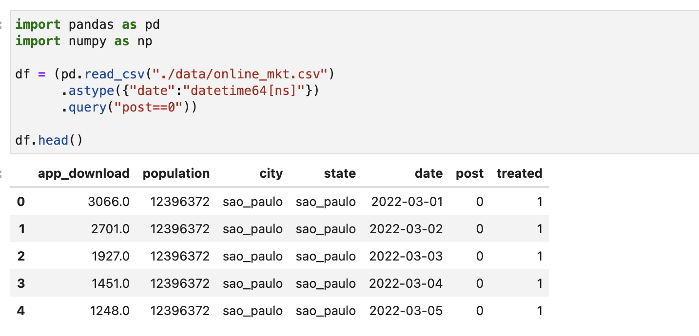
실험 대상이 도시이기 때문에 실험에 필요한 도시의 수를 계산할 수 있다.
\(n = 16\sigma^2 / \delta^2\)
이 공식을 통해 계산해보면 36663개의 도시가 필요한데, 이는 현실적으로 불가능한 숫자이다. 여기서 나타난 도시의 숫자는 50개이다. 이중차분법을 통해 ATT (실험군 처치 효과)를 구할 수도 있겠지만, 여기서 관심은 ATE이다. ex) 마케팅을 전국 단위로 할 때 효과 추정
10.2 통제집단합성법 설계#
9장에서 통제집단합성법을 통해 대조군의 평균을 잘 근사하는 가상의 대조군을 구했으나, 여기서는 실험 대상의 평균 행동을 잘 근사하는 실험군을 찾는 데 활용하고자 한다. 데이터는 다음과 같다.
각 날짜별, 도시별 앱 다운로드 수가 다음과 같이 나타난다.
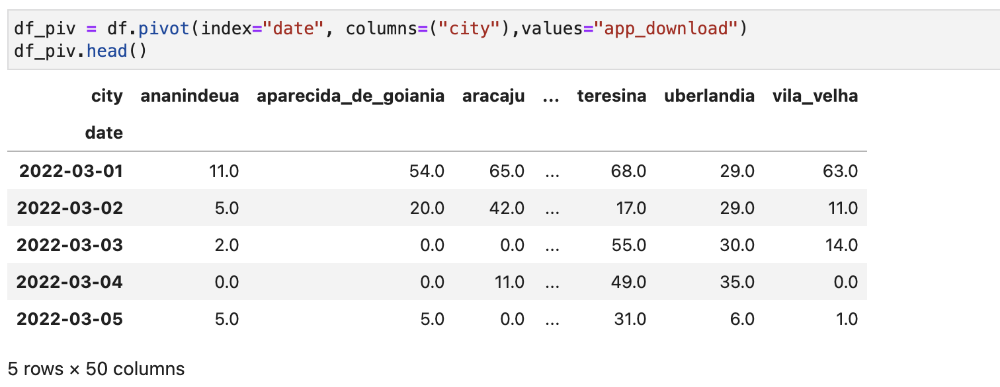
전체 평균을 구하기 위해 각 도시가 평균에 기여하는 정도를 살펴보자. 인구수에 따라 평균에 기여하는 정도가 달라진다. 이 가중치 벡터를 \(f\)라 하자.
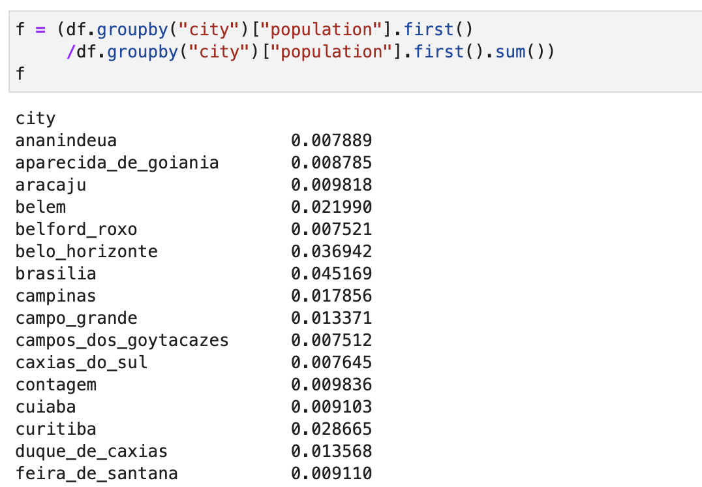
다음과 같은 가중치 벡터 \(w\)를 찾는 것이 목표이다.
\(Y_{post} f = Y_{post} w\)
\(|w|_0<N\)
이고, 위는 실험군 도시들을 찾는 것이다. 다음에서는 대조군을 찾는다.
\(Y_{post} f = Y_{post} v\)
\(s.t.\ w_iv_i = 0\ \ \forall i\)
이러한 목표를 만족시키기 위해 9장에서 고려했던 통제집단합성법을 사용하자.
\(min_{w,v} ||Y_{pre}f - Y_{pre}w_{tr}-\alpha_0||^2 + ||Y_{pre}f - Y_{pre}v_{co}-\beta_0||^2\)
\(s.t.\ \Sigma w_i=1\) and \(\Sigma v_i = 1\),
\(w_i, v_i \ge 0\ \ \forall i\)
\(w_iv_i = 0\ \ \forall i\)
\(|w|_0 \le m\)
이 함수는 볼록하지 않기 때문에 최적의 실험군과 대조군을 찾는 것은 어려운 일이다. 그러나 적절한 실험군과 대조군을 찾는 일은 가능하다.
10.2.1 무작위로 실험군 선택하기#
무작위로 도시를 선택하고 해당 도시들의 가중치를 확인한다. 너무 작은 가중치를 가진 도시는 제외한다.
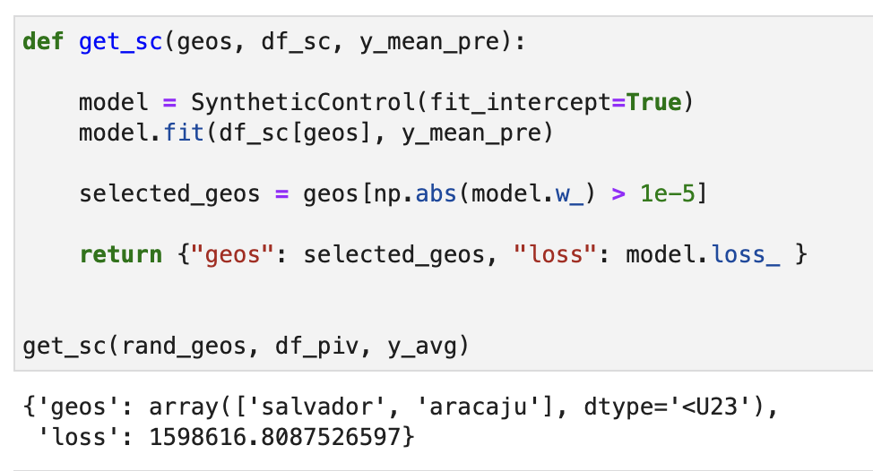
다음 코드는 위에서 구한 실험군 도시들을 제외하고, 나머지 도시들을 이용해서 대조군 도시를 만드는 것이다. 이 때 전체 도시의 수가 적으므로 모든 도시들이 가상의 대조군을 만드는 데 활용되었다.
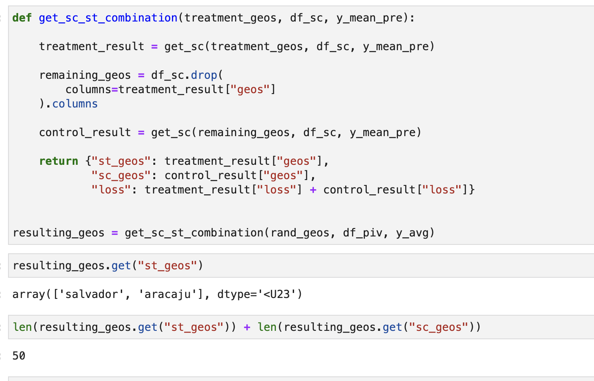
다음과 같이 대조군은 잘 근사가 되었으나, 실험군은 근사가 잘 이루어지지 않은 것을 확인할 수 있다.
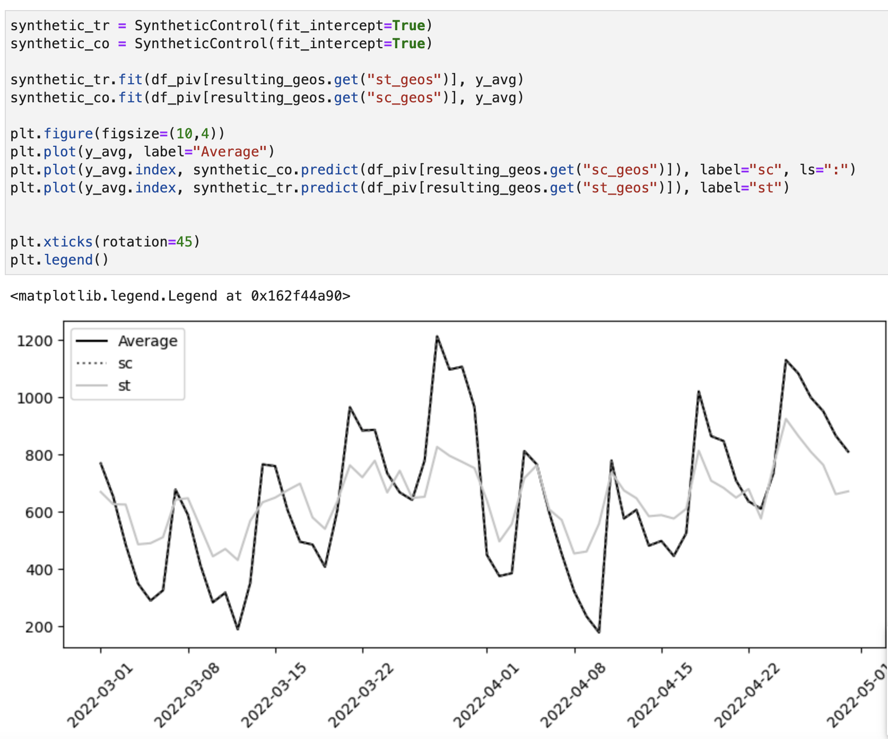
책에서는 이러한 과정을 1000번 반복하여 가장 낮은 loss 값을 가진 경우를 구하였다.
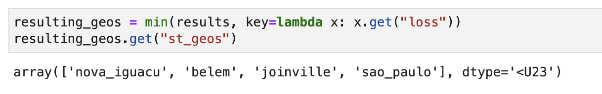
결과
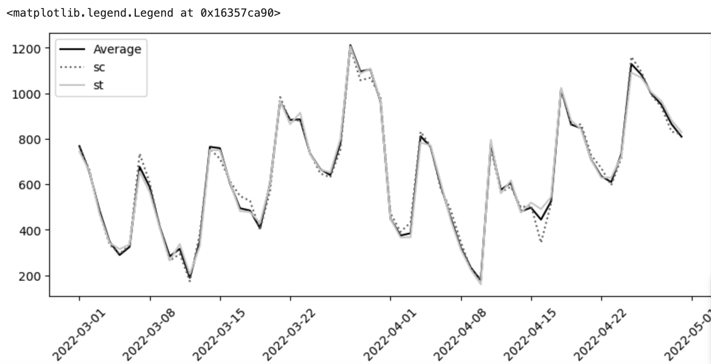
10.3 스위치백 실험#
앞에서는 적은 수의 실험 대상에서 최적의 실험군을 선택하였으나, 실험 대상이 1개인 경우에 어떻게 할 것인가라는 물음이 생긴다. 만약 처치를 반복할 수 있고, 처치의 효과가 금방 없어진다면 이러한 처치를 반복하여 전후 비교를 할 수 있다. 이를 스위치백 실험이라고 한다.
다음 데이터에서는 각 기간마다 50%의 확률로 처치 여부를 무작위 배정한다. 이 실험에서는 가격 인상이 배달시간에 어떤 영향을 미치는지 알고 싶어한다. 이 데이터에서는 동일한 처치를 연속해서 세 번 받는 경우, 관측된 결과(delivery_time)는 처치를 항상 받았을 때(delivery_time_1)와 같아지고, 연속해서 3번의 처치를 받지 않는 경우에는 처치를 전혀 받지 않았을 때(delivery_time_0)의 결과와 같아진다.
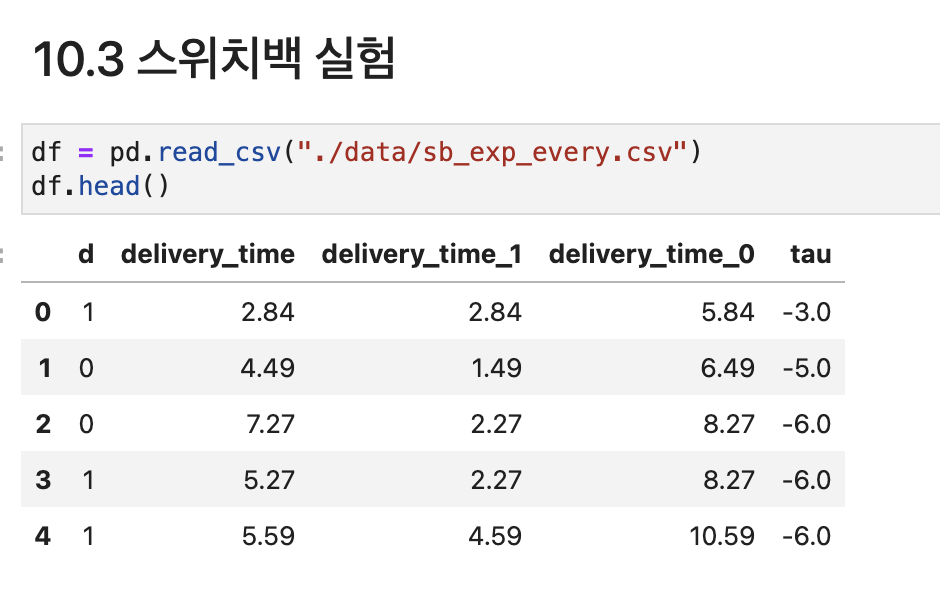
즉, 데이터는 다음과 같은 형태를 따른다.
\(Y_t = f(d_{t-2},d_{t-1},d_{t})\)
\(d_t\)는 \(t\) 시점의 처치 여부(0, 1)
전체 처치효과 \(\tau_m\)는 다음과 같이 정의된다.
\(\tau_m = E[Y_t (1_{t-m},\ldots,1_t)-Y_t (0_{t-m},\ldots,0_t)]\)
\(m\)이 2인 경우에 위의 예시와 같아진다.
Model based regression#
예를 들어, d(Lag)를 6번째까지 구하고, regression을 통해 유의한 \(m\)을 파악한다.
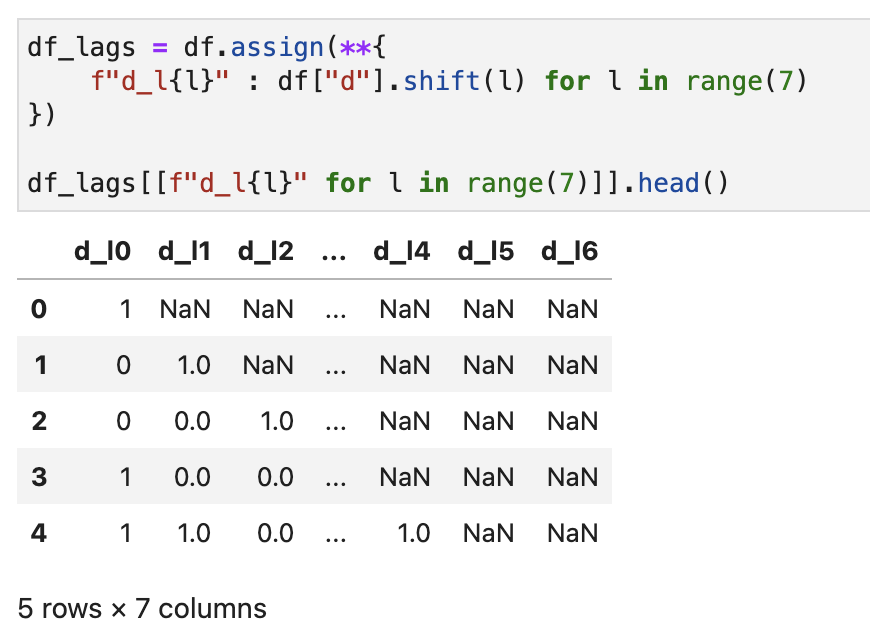
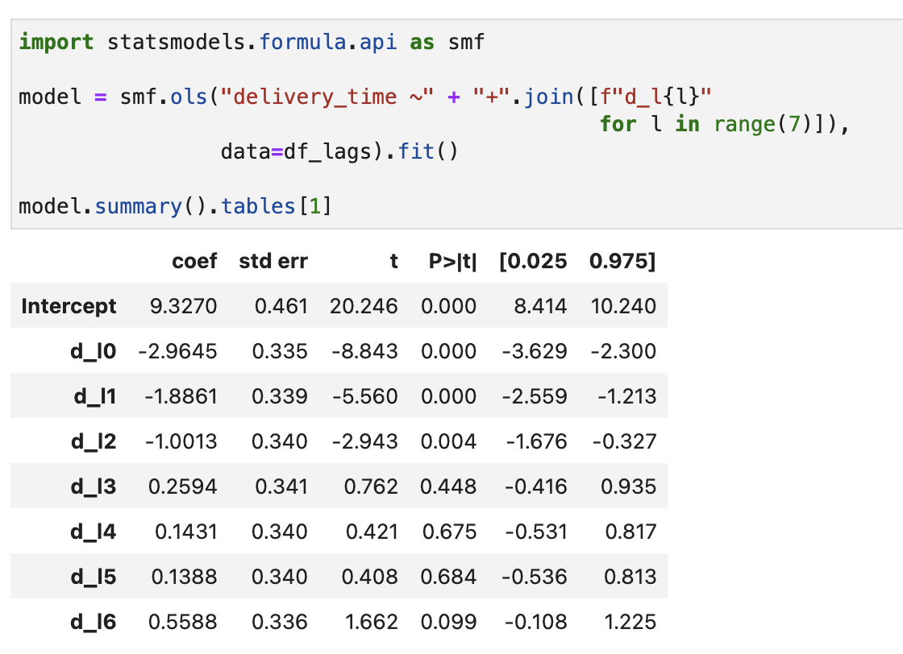
결과적으로 다음과 같이 구할 수 있다. 절편을 제외하고, 각 시차효과를 더하고 분산을 구할 수 있다.
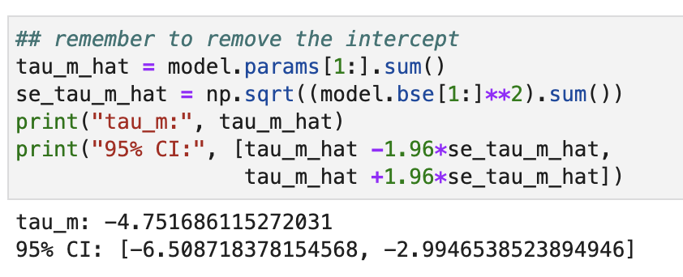
유의한 시차만 선택하는 경우에는 분산을 크게 줄일 수 있다.
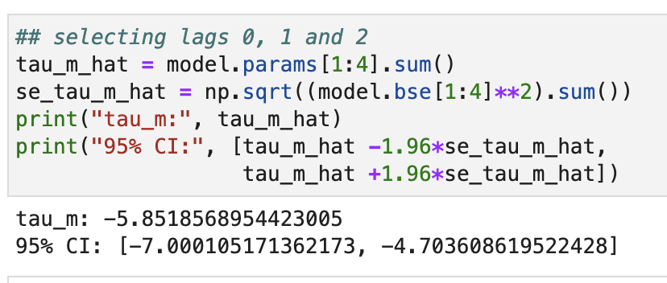
10.3.3 디자인 기반의 추정#
모델 설정이 어려운 경우에는 처치 배정 메커니즘을 이용하여 \(\tau_m\)을 추정할 수 있다. 다음과 같은 추정량을 구해야 한다.
\(\hat{Y}(d)=\frac{1}{ T-m}\Sigma_{t=m+1}^T Y_t \frac{1(D_{t-m:t}=d)}{P(D_{t-m:t}=d)}\)
\(P(D_{t-m:t}=d)\)
여기서 \(D_{t-m:t}\)는 현재 및 최근 m개 처치의 벡터이고 \(d\)는 상수 처치 d의 벡터이다.
\(P(D_{t-m:1}=1)=P(D_{t-m:1}=0)\)
각 랜덤화 시점에서 p=50%이다. 계산 코드는 책 참고.
더 많은 데이터를 확보하기 위해 동일한 처치를 계속 시행한다. 또한, 처치의 분산을 증가시켜야 적절한 추정을 할 수 있다. 이 두 가지를 절충하기 위해 \(m+1\)기간마다 랜덤화하면 된다. 이월 효과의 차수가 2인 경우, 세 기간마다 랜덤화한다. 또한, 여기서 분산을 최소로 만들기 위해 다음과 같이 구할 수 있다.
\(\mathbb{T}^* = \{ 1,2m+1,3m+1,\ldots, (n-2)m +1\}\)
\(\mathbb{T}^*\) 는 최적의 랜덤화 지점, \(m\)은 이월 효과의 차수, \(n\)은 \(T/m=n\)을 만족하는 4 이상의 정수이다. 다음은 500번의 시뮬레이션을 통해 구한 것이다.
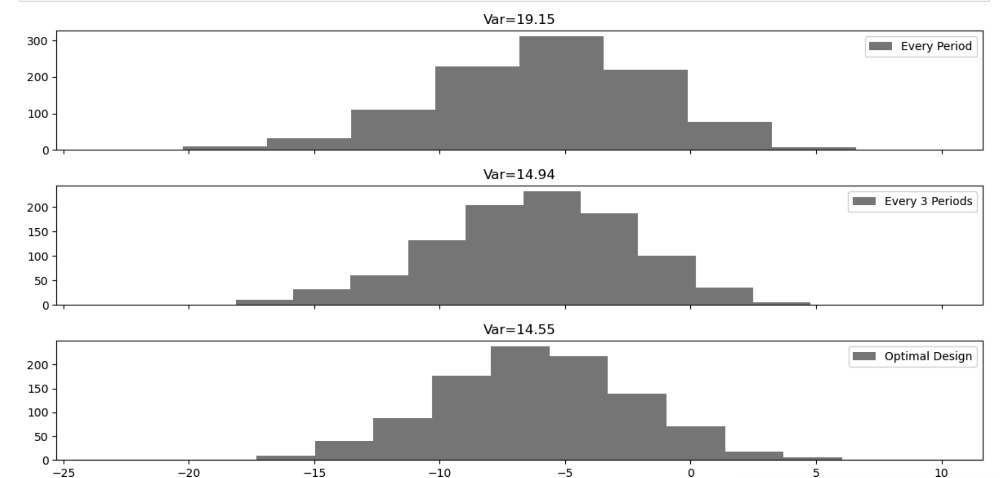
분산은 다음과 같이 계산할 수 있다.
\(\hat{\sigma}(\tau)=\frac{1} {(T-m)^2}\big \{ 8 \bar{Y}_1^2 + \Sigma_{k=2}^{K-1} 32 \bar{Y_k}^2 1(d_{km+1}=d_{(k+1)m+1})+8\bar{Y}_K^2 \big \}\)
계산은 책 참고.